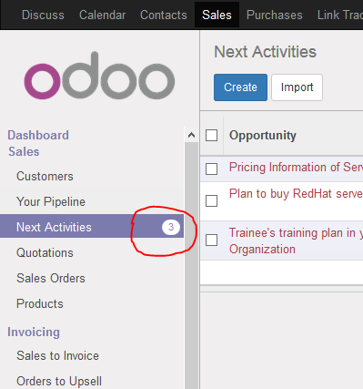

<section class="oe_container">
    <div class="oe_row oe_spaced">
        <h2 class="oe_slogan" style="color:#875A7B;">Showing a menu badge in Odoo</h2>
        <h3 class="oe_slogan">odoo 11</h3>
        <div class="oe_demo oe_screenshot">
            
        </div>
        <div>
            <h2>Step 1: Configure your model</h2>
            <p>_inherit = ['ir.needaction_mixin']</p>
            <h2>Step 2: Add function.</h2>
            <p>
                @api.model
                <br>
                def _needaction_domain_get(self):<br>
                    <span style="margin-left:30px;">return False</span>
                <br/>
                <br/>
                @api.model<br>
                def _needaction_count(self, domain=None):<br>
                <span style="margin-left:30px;">return self.search_count(domain)</span>

            </p>

        </div>
    </div>
</section>